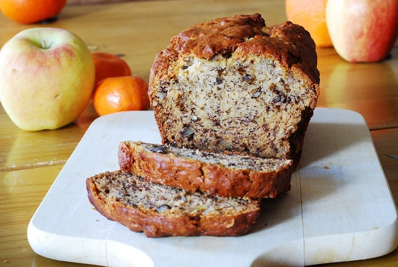

Banana Walnut Bread

Description:
Banana bread recipe mixed with some walnuts.
Ingredients:
- 1 Cup Sugar
- 1/2 Cups Butter
- 2 large Eggs
- 3 Ripe Bananas
- 1 Tbsp Milk
- 1 Tsp Cinnammon
- 2 Cups All Purpose Flour
- 1 Tsp Baking Powder
- 1 Tsp Baking Soda
- 1 Tsp Salt
- 1 Cup Walnuts(Chopped)
Steps:
- Set to 325 degrees fahrenheit. Butter a loaf pan.
- Sift 2 cups of flour, 1 tsp baking soda and 1 tsp salt into a medium bowl; stir in 1 cup of walnuts, set aside. Whisk the 2 large eggs and 1 tsp of vanilla together.
- In a mixing bowl cream the butter and sugar until light and fluffy. Gradually pour the egg mixture into the butter while mixing until incorporated.
- In a small bowl, mash the bananas with a fork. Mix in the milk and cinnammon.
- Add the banana mixture to the creamed mixture and stir until combined. Add dry ingredients, mixing just until flour disappears.
- Pour batter into prepared pan and bake 1 hour to 1 hour and 10 minutes, until a toothpick inserted in the center comes out clean. Set aside to cool on a rack for 15 minutes. Remove bread from pan, invert onto rack and cool completely before eating.
Home